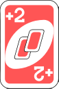
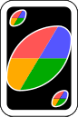
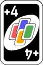

Spela uno!
Resultatet av det här projektet är ett Unospel för fler spelare som kan sitta vid olika datorer och spela mot varandra. Uno är ett vanligt kortspel som många spelat som barn och som nu kan spelas över nätverk. Utöver själva spelet finns även en chattfunktion så att allmänt småprat kan försigkomma under spelets gång, som sig bör vid sällskapsspel. Instruktioner för att ladda ner spelet samt regler finns längre ner på den här sidan.
Så här gör du för att hämta och köra igång spelet:
För att hämta spelet
- Forka oss på github:Fork
- Hitta vänner / spelsugna fiender.
- Kör klassen UnoMain för att starta upp servern. Låt därefter alla spelare som vill vara med köra GameClient.
- Spela Uno tills du stupar.
- Spread the good word.
Regler
När spelet startar har alla spelare sju kort var på handen (raden uppvända kort i nederkanten av skärmen). Det finns också ett uppvänt kort och en upp-och-nedvänd hög med kort.
En spelare kan lägga kort av samma färg eller valör som det redan lagda, uppvända, kortet. Även flera kort från handen kan läggas samtidigt, om de har samma valör. Har korten annan valör än det senast lagda måste det understa, först lagda, kortet från handen ha samma färg som det senast lagda (det uppvända kortet i mitten på skärmen).
I varje färg finns det kort med siffrorna 0-9 samt ett antal specialkort, se bilderna nedan. Dessa är stoppkort, som hoppar över en spelare (eller flera, om fler kort läggs samtidigt), vändkort, som byter håll så många gånger som kort läggs och +2-kort som ger nästa spelare två kort (så många gånger som antalet kort som läggs samtigt) och hoppar sedan över den spelarens tur.
Det finns även två sorters kort med svart baksida, se bilderna nedan. Dessa kan alltid läggas. Det ena låter den spelaren som la kortet välja färg, för att sedan låta turen passera vidare. Det andra är ett +4-kort. Spelaren får välja färg och nästa spelare får fyra kort för att därefter stå över sin tur.
 Kan en spelare inte lägga får denne ta upp ett kort. klicka på högen med upp-och-nedvända kort. Ett nytt kort läggs till i handen och turen går vidare.
När en spelare endast har ett kort kvar, eller kan lägga alla sina kort samtidigt (det vill säga om alla korten har samma valör) skall denne säga Uno (genom att trycka på texten "say UNO"). Om spelaren sedan lägger sina sista kort har denne vunnit. Får spelaren upp nya kort händer inget särskilt, men kom ihåg att säga uno även nsäta gång du bara har ett kort kvar på handen!
Lägger en spelare sitt sista kort utan att ha sagt uno får spelaren tre kort på handen och turen går vidare. Spelet fortsätter som vanligt.